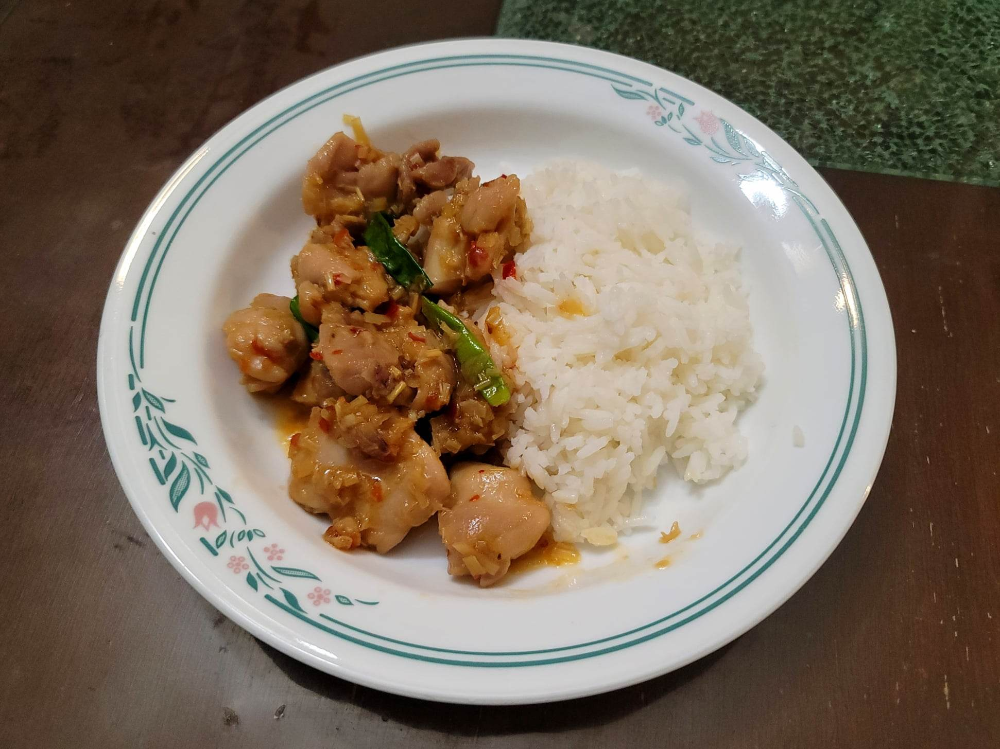

Lemongrass Chicken

Ingredients:
Marinade:
- 1 lb Chicken thighs, cut into 1" pieces
- 1 tsp Salt
- 2 tsp Sugar
- 1/3 tsp MSG or Chicken bouillon
Sauce:
- 2 tbsp Fish sauce
- 1 tbsp Sambal
- 1/2 cup Coconut juice
Lemongrass Chicken:
- 4 tbsp Canola oil
- 3 Shallots, minced
- 1 tbsp Garlic, minced
- 4-5 tbsp Lemongrass, minced
- Optional: Scallions, minced for garnish
- 1/2 Onion, very thinly sliced for garnish
Instructions:
- Combine the marinade ingredients and let marinate for at least 15 minutes or overnight.
- Combine the sauce ingredients.
- Add the oil to a wok over medium-high heat. Add the shallots and sauté until light brown. Then add in and sauté the garlic until light brown. Then add in the lemongrass and sauté until fragrant.
- Add the chicken and sauté until browned. Lower the heat to medium and pour in the sauce. Stir to combine and then cover with a lid. Cook for 5 minutes or until the chicken is completely cooked. Taste and adjust for seasoning.
- Remove the lid and add in the garnish. Toss for 1-2 minutes or until the garnish is just wilted/softened. Remove from the heat and serve hot with rice.